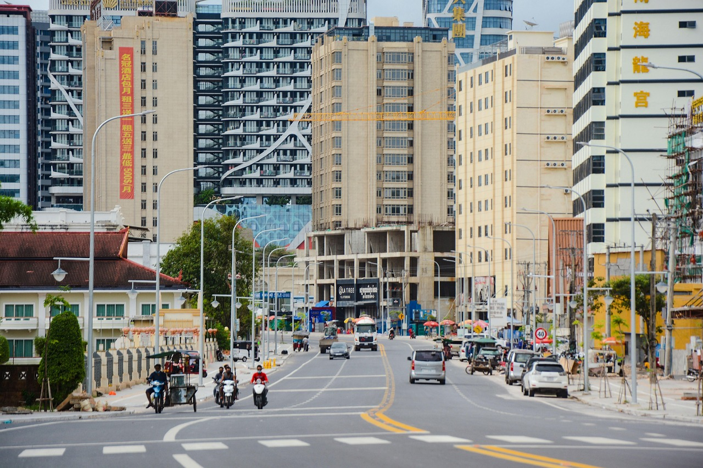
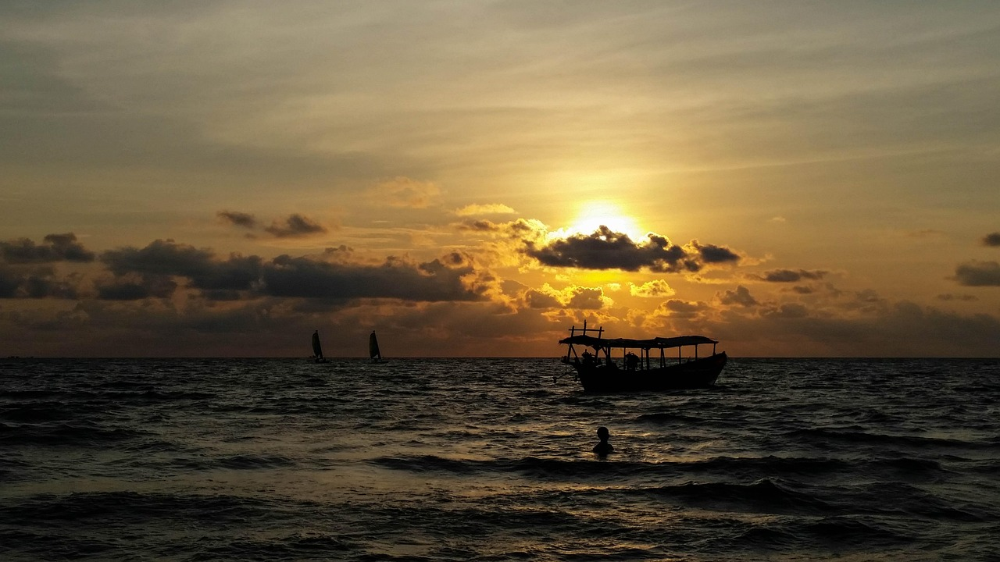

A Photo Tour of
CAMBODIA
"KIMDOM OF WONDER"
KOMPONG SOM
Kampong Som, officially Sihanoukville, is a coastal city in southern Cambodia on the Gulf of Thailand coast. It was developed in the 1950s and became Cambodia's first and only deep-water port. Kampong Som is, and continues to play, an important role in the maritime trade of the nation.
Over the years, Sihanoukville has transformed from a quiet fishing village into a bustling urban center, experiencing significant development, including the construction of numerous casinos and resorts.
